Aprenda criando
Unidos pela justiça
Conheça esse jogo de luta RPG
Skullgirls é um jogo de luta 2D rápido e dinâmico que gira em torno do "Coração de Caveira" (Skull Heart), um artefato mágico que concede desejos a mulheres, mas transforma aquelas com corações impuros em monstros conhecidos como Skullgirls.
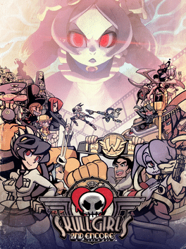
Conheça a equipe
Lutadores em destaque
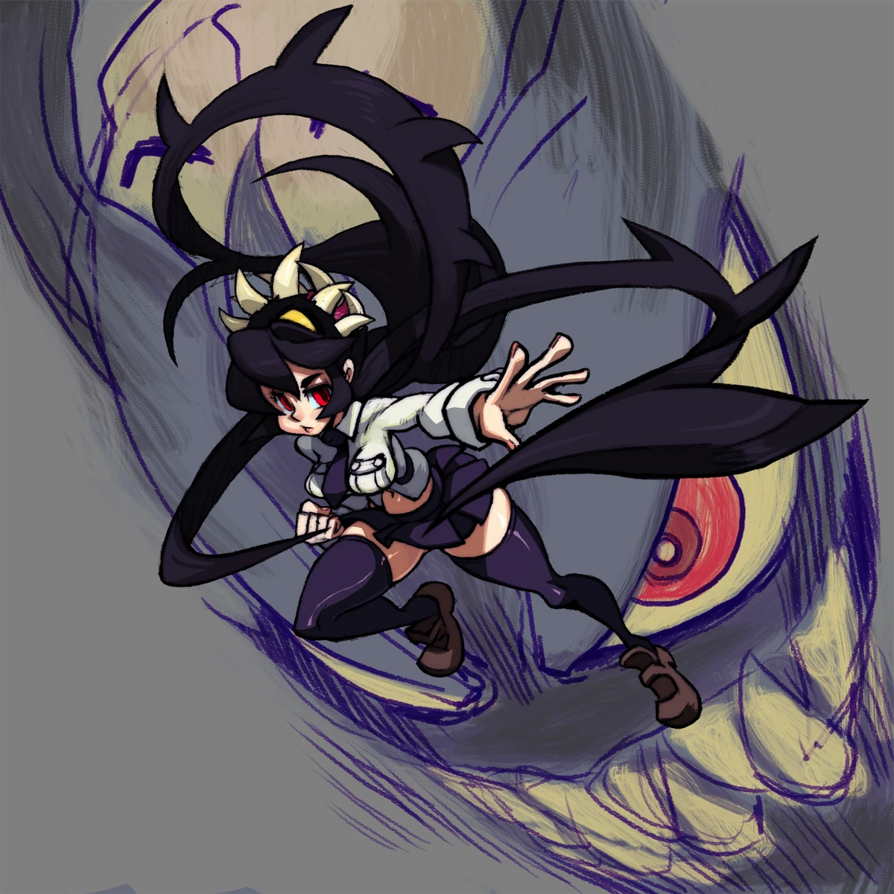
Filia
Filia é uma jovem gentil e de bom coração que perdeu completamente a memória. Seu parasita, Samson, se manifesta como seu cabelo e a ajuda a lutar e se proteger. Sem lembranças de seu passado ou de como se uniu a ele, seu principal objetivo é descobrir quem realmente é.
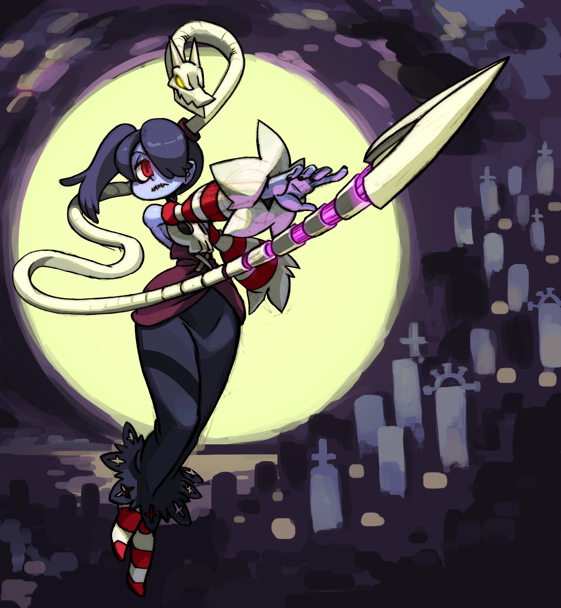
Squigly
Squigly fazia parte da família Contiello e foi morta durante um ataque dos Medici. Após ser ressuscitada, passou a viver acompanhada de Leviathan, seu parasita, que a protege e mantém sua consciência. Seu principal objetivo é proteger sua família e buscar justiça pela morte deles, enquanto luta ao lado de Leviathan.
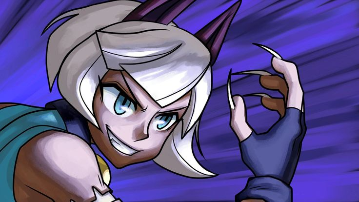
Ms Fortune
Ms. Fortune é uma gata-garota e integrante da gangue Fishbone, que foi morta pelos Medici após roubar o Life Gem. Ressuscitada pelo poder da joia, ela se tornou uma lutadora ágil e capaz de separar partes do próprio corpo. Seu principal objetivo é se vingar dos Medici e proteger seus antigos companheiros.
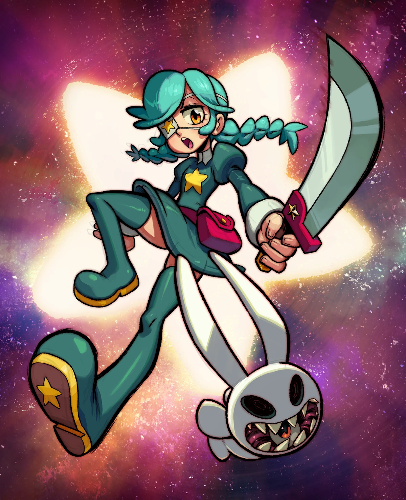
Annie
Filia é uma jovem gentil e de bom coração que perdeu completamente a memória. Seu parasita, Samson, se manifesta como seu cabelo e a ajuda a lutar e se proteger. Sem lembranças de seu passado ou de como se uniu a ele, seu principal objetivo é descobrir quem realmente é.
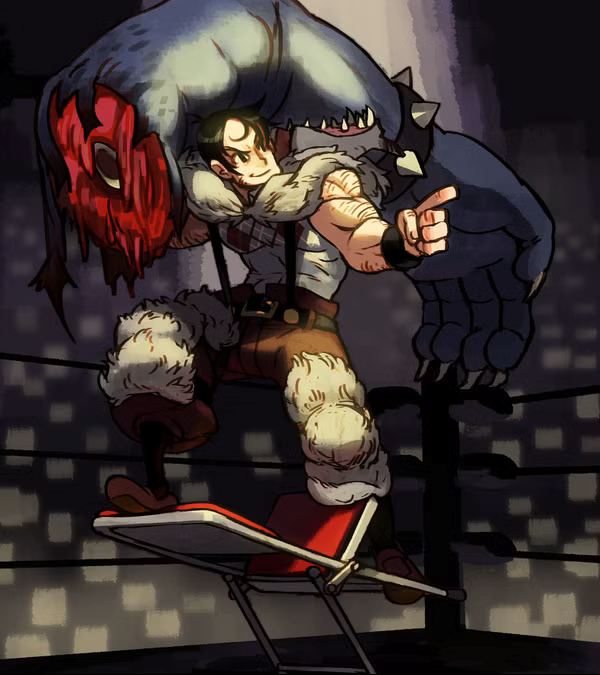
Beowulf
Filia é uma jovem gentil e de bom coração que perdeu completamente a memória. Seu parasita, Samson, se manifesta como seu cabelo e a ajuda a lutar e se proteger. Sem lembranças de seu passado ou de como se uniu a ele, seu principal objetivo é descobrir quem realmente é.
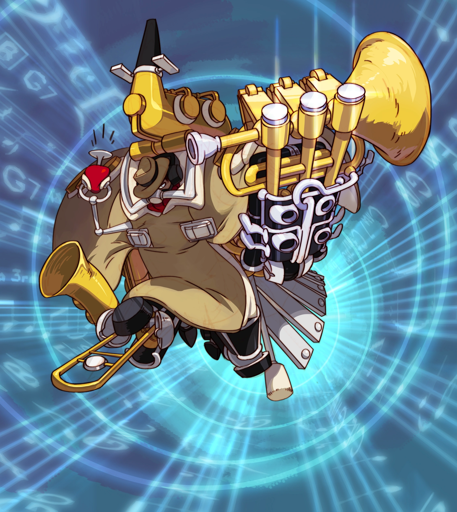
BigBand
Filia é uma jovem gentil e de bom coração que perdeu completamente a memória. Seu parasita, Samson, se manifesta como seu cabelo e a ajuda a lutar e se proteger. Sem lembranças de seu passado ou de como se uniu a ele, seu principal objetivo é descobrir quem realmente é.
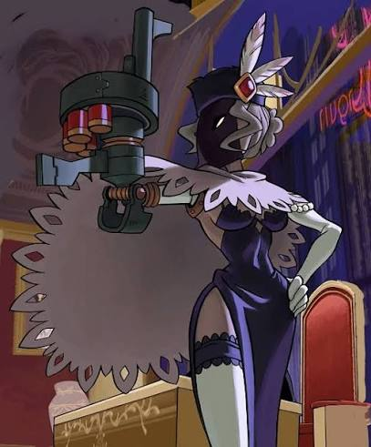
Black Dahlia
Filia é uma jovem gentil e de bom coração que perdeu completamente a memória. Seu parasita, Samson, se manifesta como seu cabelo e a ajuda a lutar e se proteger. Sem lembranças de seu passado ou de como se uniu a ele, seu principal objetivo é descobrir quem realmente é.
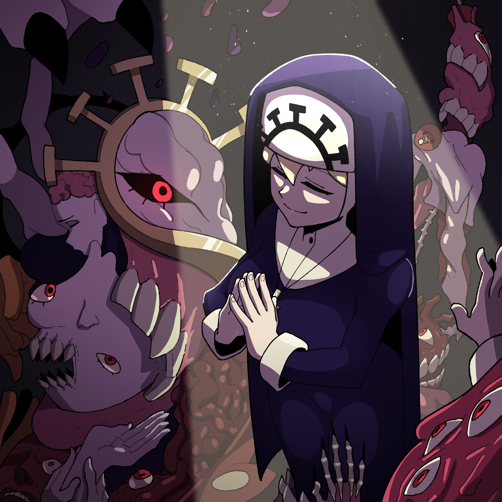
Double
Filia é uma jovem gentil e de bom coração que perdeu completamente a memória. Seu parasita, Samson, se manifesta como seu cabelo e a ajuda a lutar e se proteger. Sem lembranças de seu passado ou de como se uniu a ele, seu principal objetivo é descobrir quem realmente é.
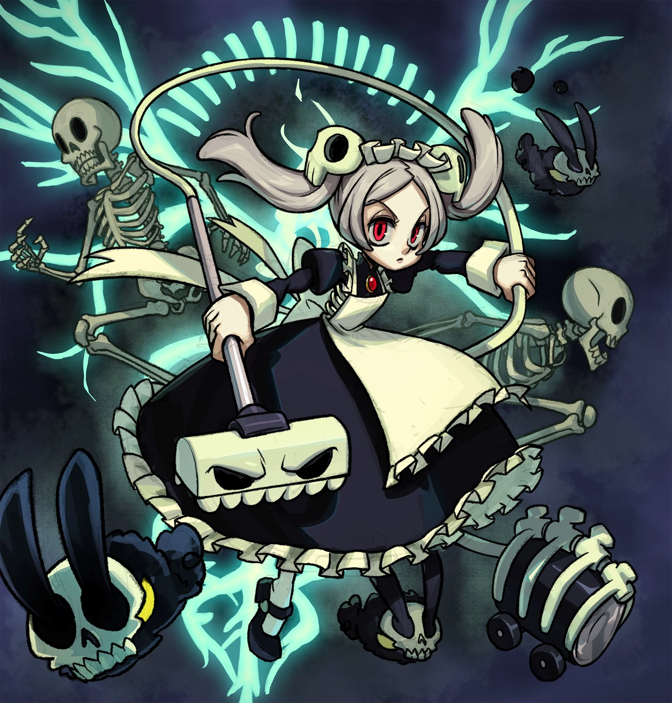
Marie
Filia é uma jovem gentil e de bom coração que perdeu completamente a memória. Seu parasita, Samson, se manifesta como seu cabelo e a ajuda a lutar e se proteger. Sem lembranças de seu passado ou de como se uniu a ele, seu principal objetivo é descobrir quem realmente é.
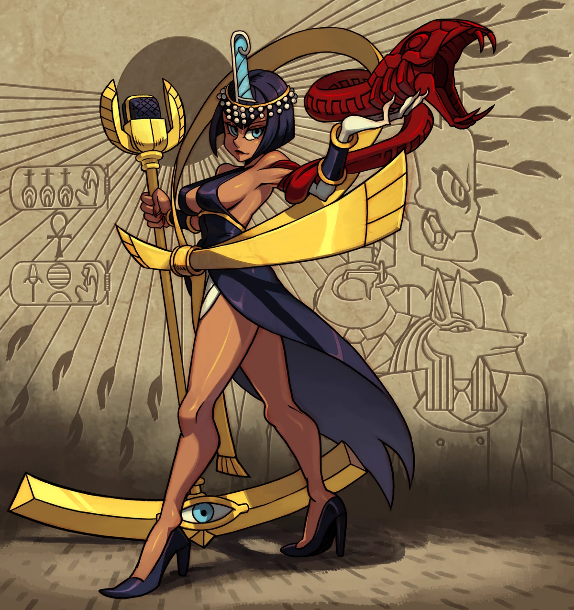
Eliza
Filia é uma jovem gentil e de bom coração que perdeu completamente a memória. Seu parasita, Samson, se manifesta como seu cabelo e a ajuda a lutar e se proteger. Sem lembranças de seu passado ou de como se uniu a ele, seu principal objetivo é descobrir quem realmente é.
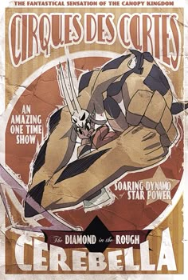
Cerebela
Filia é uma jovem gentil e de bom coração que perdeu completamente a memória. Seu parasita, Samson, se manifesta como seu cabelo e a ajuda a lutar e se proteger. Sem lembranças de seu passado ou de como se uniu a ele, seu principal objetivo é descobrir quem realmente é.
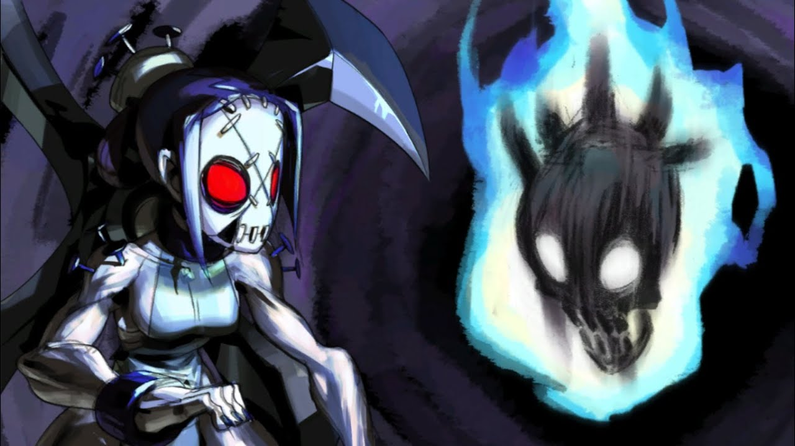
Painwheel
Filia é uma jovem gentil e de bom coração que perdeu completamente a memória. Seu parasita, Samson, se manifesta como seu cabelo e a ajuda a lutar e se proteger. Sem lembranças de seu passado ou de como se uniu a ele, seu principal objetivo é descobrir quem realmente é.
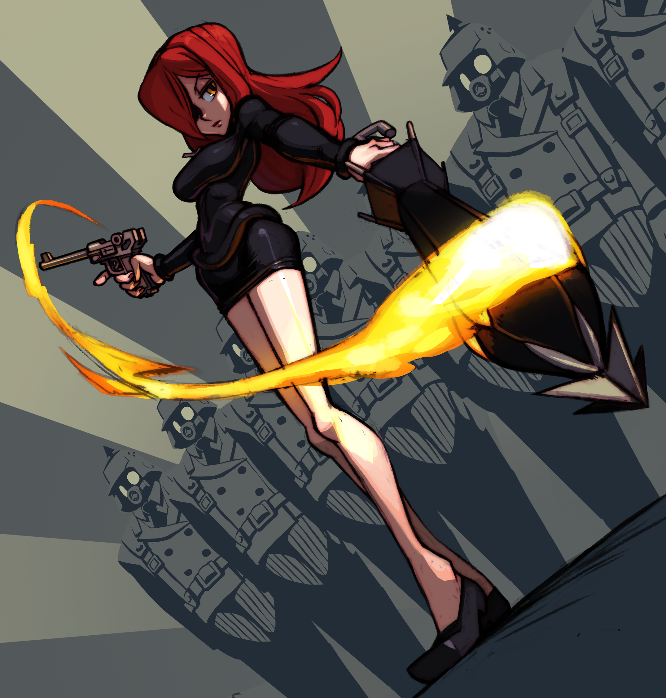
Parasoul
Filia é uma jovem gentil e de bom coração que perdeu completamente a memória. Seu parasita, Samson, se manifesta como seu cabelo e a ajuda a lutar e se proteger. Sem lembranças de seu passado ou de como se uniu a ele, seu principal objetivo é descobrir quem realmente é.
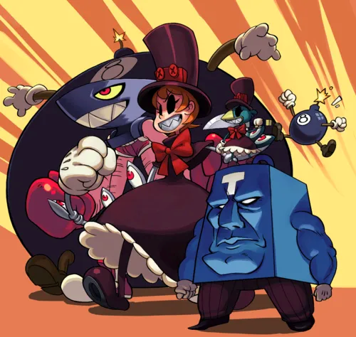
Peacock
Filia é uma jovem gentil e de bom coração que perdeu completamente a memória. Seu parasita, Samson, se manifesta como seu cabelo e a ajuda a lutar e se proteger. Sem lembranças de seu passado ou de como se uniu a ele, seu principal objetivo é descobrir quem realmente é.
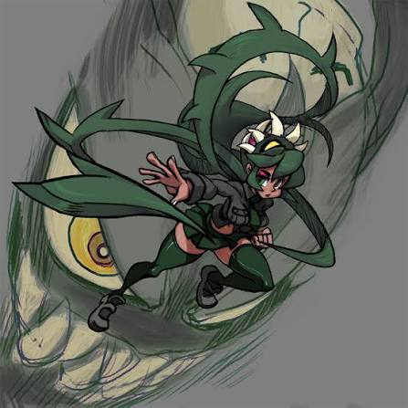
Fukua
Filia é uma jovem gentil e de bom coração que perdeu completamente a memória. Seu parasita, Samson, se manifesta como seu cabelo e a ajuda a lutar e se proteger. Sem lembranças de seu passado ou de como se uniu a ele, seu principal objetivo é descobrir quem realmente é.
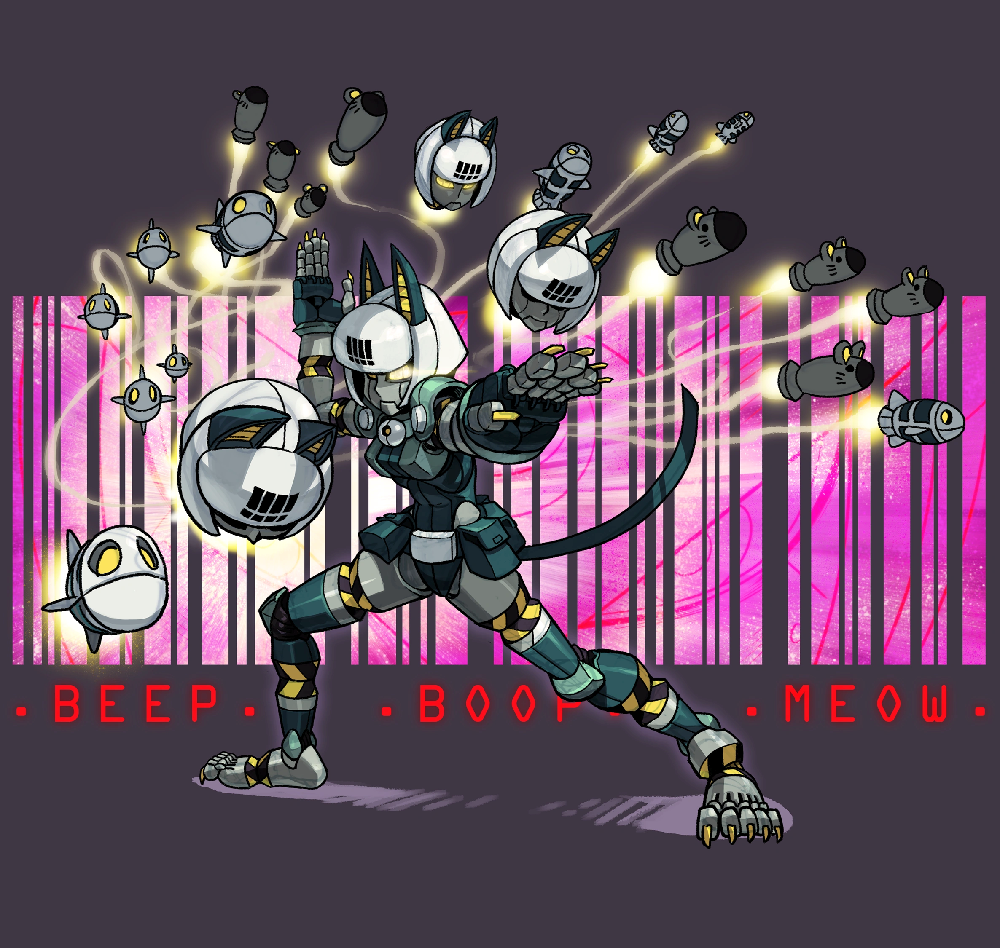
Robo-Fortune
Filia é uma jovem gentil e de bom coração que perdeu completamente a memória. Seu parasita, Samson, se manifesta como seu cabelo e a ajuda a lutar e se proteger. Sem lembranças de seu passado ou de como se uniu a ele, seu principal objetivo é descobrir quem realmente é.
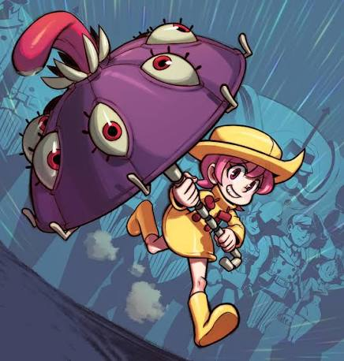
Umbrela
Filia é uma jovem gentil e de bom coração que perdeu completamente a memória. Seu parasita, Samson, se manifesta como seu cabelo e a ajuda a lutar e se proteger. Sem lembranças de seu passado ou de como se uniu a ele, seu principal objetivo é descobrir quem realmente é.
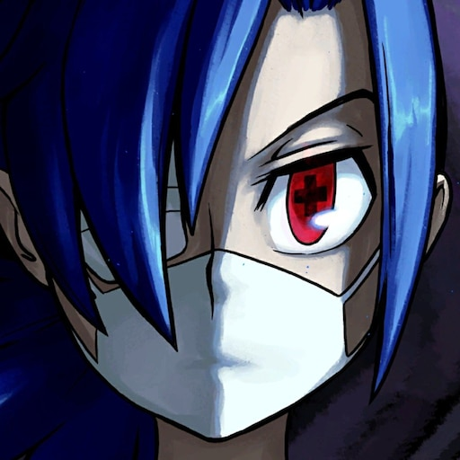
Valentine
Filia é uma jovem gentil e de bom coração que perdeu completamente a memória. Seu parasita, Samson, se manifesta como seu cabelo e a ajuda a lutar e se proteger. Sem lembranças de seu passado ou de como se uniu a ele, seu principal objetivo é descobrir quem realmente é.